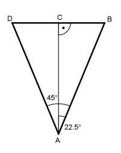

Aufgabe 260
Einer regelmäßigen achtseitigen Pyramide fehlt
die Spitze. Wie hoch war sie ursprünglich, wenn
der entstandene Stumpf noch 1,2 m hoch ist, seine
Grundkante 30 cm und seine Deckkante 10 cm betragen?

Grunddreieck des Achtecks:
DB = 30 cm
Im Dreieck ABC gilt:
CB = DB/2 = 30 cm/2 = 15 cm
360°
Mittelpunktswinkel = ------- = 45°
8
CB
tan 22,5° = ---- |*AC
AC
AC * tan 22,5° = CB |:tan 22,5°
CB 15 cm
AC = ----------- = -------- = 36,2 cm = h1
tan 22,5° 0,4142
Im Deckdreieck des Achtecks gilt nach
entsprechender Rechnung:
5 cm
h2 = -------- = 12,1 cm
0,4142
 Strahlensatz:
12,1 h
------ = ---------
36,2 120 + h
Über Kreuz multiplizieren:
12,1 * (120 + h) = 36,2 * h
12,1 * 120 + 12,1 * h = 36,2 * h |-12,1 * h
12,1 * 120 = 24,1 * h | : 24,1
h = 60 cm
Ursprüngliche Höhe der Pyramide = 120 cm + 60 cm = 180 cm
Strahlensatz:
12,1 h
------ = ---------
36,2 120 + h
Über Kreuz multiplizieren:
12,1 * (120 + h) = 36,2 * h
12,1 * 120 + 12,1 * h = 36,2 * h |-12,1 * h
12,1 * 120 = 24,1 * h | : 24,1
h = 60 cm
Ursprüngliche Höhe der Pyramide = 120 cm + 60 cm = 180 cm